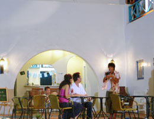

鄰近景點
- 山水沙灘（希臘邊境距離山水沙灘只有三百公尺，此沙灘號稱澎湖本島最美的沙灘）。
- 風櫃洞 (騎車約8分鐘到達)。
- 玻璃沙灘 (騎車約6分鐘到達)。
- 鎖港鎮風塔 (騎車約2分鐘到達)。
- 林投公園 (騎車約10分鐘到達)。
- 蒔里沙灘 (騎車約5分鐘到達)。
- 馬公市區 (騎車約15分鐘到達)。
- 蛇頭山 (騎車約8分鐘到達)。
- 果葉日出 (騎車約15分鐘到達)。
- 奎壁山 (騎車約20分鐘到達)。
- 澎湖國家風景管理處 (騎車約5分鐘到達)。
- 7-11 (騎車約1分鐘到達)。
- 鎖港定置網漁獲市場 (騎車約三分鐘到達)。
鄰近活動
- 衝浪教學(教練於山水沙灘退潮時刻指導教學)
- 入夜前往山水沙灘探訪夜光星砂。
- 獨木舟、風浪板、滑水三合一體驗。
- 隘門沙灘6合１水上活動（不限次數）。
- 菜園海上牧場體驗釣海儷、烤牡蠣等海上生活樂趣。
- 山水海域浮潛教學。
- 星光BBQ。